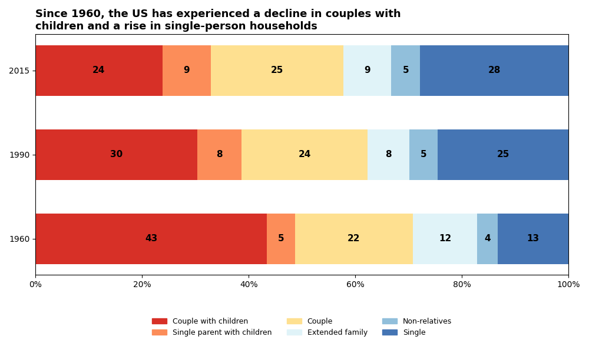
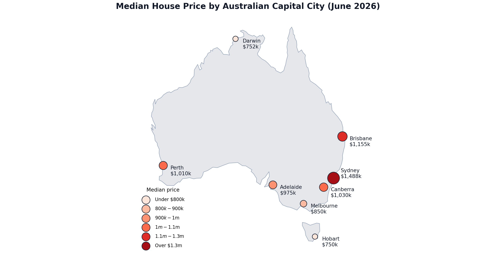

Improving the Master Visualisation
Posted [Month Day, Year]

Overview
For this exercise I took my reproduced and recoloured "Visualizing the Richest Cities in the US" visualisation from Module 5 and looked for ways to improve it. I ran it through the Data Visualization Checklist, identified an improvement based on the result, and implemented it using Photoshop.
Data Visualization Checklist Review
Full result: datavisualizationchecklist.com/datavizresult/data-viz-o7q05
The improvement I found was how the data was labelled. I decided to remove the legend and instead have labels pointing directly at the colours in the graph. This was done using the original labels from the image, repositioned using Photoshop.
Summary of Improvements
Removing the legend and replacing it with direct labels means a viewer no longer has to look back and forth between the chart and a separate key to work out what each colour represents, making the chart faster to read and more accessible.
Before & After
The reproduced and recoloured visualisation from Module 5, compared against the improved version with direct labels.

References
- Irena. (2020, September 21). Visualizing the richest cities in the US. HowMuch.net. https://howmuch.net/articles/richest-cities-in-the-us
Adding a Variable
Posted [Month Day, Year]

Overview
For this exercise I selected "Life Expectancy" from Our World in Data, a bar chart showing life expectancy at birth for the World, Americas, Europe, and Africa in a single year. I decided to add the last 5 years of data (2019–2023) to see if there was any meaningful trend or relationship between regions over time. To incorporate this additional variable I used a line graph, with year on the x-axis and a separate coloured line per region, making the visualisation multivariate.
Original Visualisation Reference
- Dattani, S., Rodés-Guirao, L., Ritchie, H., Ortiz-Ospina, E., & Roser, M. (2023). Life expectancy. Our World in Data. Retrieved 21 September 2026, https://ourworldindata.org/grapher/life-expectancy?tab=discrete-bar&time=latest&country=OWID_WRL~Americas~OWID_EUR~OWID_AFR
The Added Variable
The variable I decided to include was time, specifically the last 5 years of data (2019–2023), to see if there was any meaningful trend or relationship between regions, rather than only comparing them at a single point in time.
Design Approach
I used a line graph, with region encoded by line colour, to incorporate the added time variable while keeping the chart accessible and publication-ready.
Final Multivariate Visualisation
Data Card
| Title | Life Expectancy by Region (2019–2023) |
|---|---|
| Summary | Line graph comparing life expectancy at birth across Europe, the Americas, the world average and Africa, 2019–2023. Europe is the highest and Africa is the lowest. All regions dip around 2020–2021, likely due to the pandemic. Original visualisation was a bar chart from Our World in Data that showed the life expectancy per region for 1 year. |
| Data Sources | Dattani, S., Rodés-Guirao, L., Ritchie, H., Ortiz-Ospina, E., & Roser, M. (2023). Life expectancy. Our World in Data. Data adapted from Riley (2005); Zijdeman et al. (2015); HMD (2025); UN WPP (2024). Retrieved 21 September 2026, https://ourworldindata.org/grapher/life-expectancy?tab=discrete-bar&time=latest&country=OWID_WRL~Americas~OWID_EUR~OWID_AFR |
| Mapping | X-axis: Year, 2019–2023 Y-axis: Life expectancy at birth (years) Line colour: Region (Europe, Americas, World, Africa) |
| Important Notes | Y-axis doesn't start at zero, so changes look larger than they are. Figures use UN World Population Prospects estimates, so regions with incomplete death registration like Africa may be inaccurate. Graph doesn't establish causation, but the 2020–2021 dip is likely due to Covid-19. |
| Access | Data can be downloaded from https://ourworldindata.org/grapher/life-expectancy?tab=discrete-bar&time=latest&country=OWID_WRL~Americas~OWID_EUR~OWID_AFR |
References
- Dattani, S., Rodés-Guirao, L., Ritchie, H., Ortiz-Ospina, E., & Roser, M. (2023). Life expectancy. Our World in Data. Data adapted from Riley (2005); Zijdeman et al. (2015); HMD (2025); UN WPP (2024). Retrieved 21 September 2026, https://ourworldindata.org/grapher/life-expectancy?tab=discrete-bar&time=latest&country=OWID_WRL~Americas~OWID_EUR~OWID_AFR
Median House Prices Across Australia's Capital Cities
Posted [Month Day, Year]

Overview
The topic I chose was median house price in each capital city of all Australian states, sourced from the ABS's Total Value of Dwellings release (Table 2: Median Price and Number of Transfers, Capital City and Rest of State). The spatial visualisation method I used is a proportional symbol (bubble) map, built in Python, with each capital city plotted at its real geographic coordinates and circle size and colour both encoding its median established house price.
Final Spatial Visualisation
Data Card
| Title | Median House Price by Australian Capital City (June 2026) |
|---|---|
| Summary | Proportional symbol map showing median established house prices across Australia's eight capital cities. Sydney is the highest at $1.4 million, followed by Brisbane and Canberra, while Hobart and Darwin are the lowest at around $750k. Spatial method used is proportional symbol/bubble maps as well as colour. |
| Data Sources |
Australian Bureau of Statistics. (2026, September 18). Total value of dwellings, Table 2. Median price and number of transfers (capital city and rest of state). Retrieved 30 September 2026, from https://www.abs.gov.au/statistics/economy/price-indexes-and-inflation/total-value-dwellings/latest-release Johan. (2016). World.geo.json [Data set]. Github. https://github.com/johan/world.geo.json |
| Mapping |
Size: Median price of established house transfers (AUD $'000). Location: Capital city by longitude and latitude. Colour: Median price of established house transfers sorted into 6 classes (ColorBrewer "Reds"). |
| Important Notes |
Figures are unstratified medians so don't control for differences in dwelling mix or city sizes. Australia's coastline is a simplified outline, from an open-source GitHub repository so may not be accurate. Location of cities were estimated using the image of Australia's coastline and may also not be accurate. |
| Access | Data can be downloaded from Table 2. Median price and number of transfers (capital city and rest of state). https://www.abs.gov.au/statistics/economy/price-indexes-and-inflation/total-value-dwellings/latest-release |